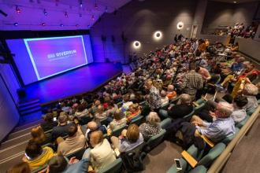
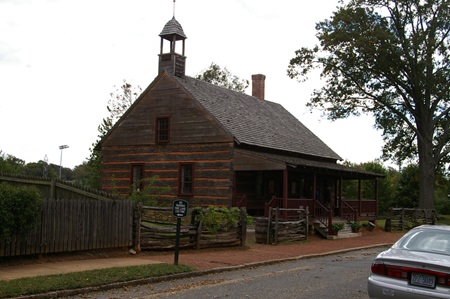
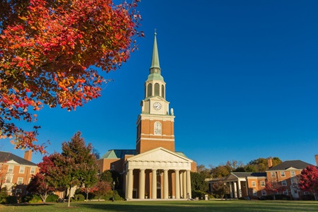
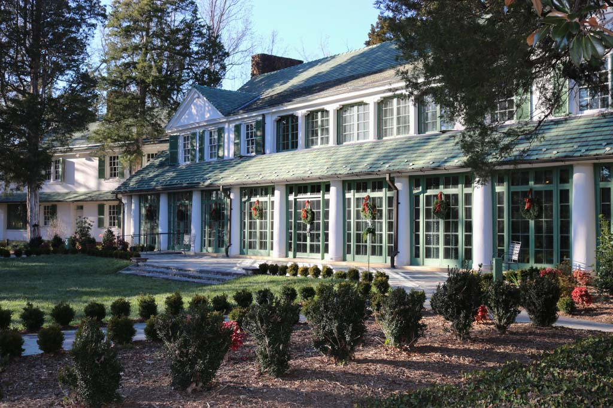

Events
RiverRun International Film Festival
April 18th to April 27th, 2024
Celebrating 26 years in 2024, RuverRun is one of the fastest-growing regional film festivals in the U.S., and a premier film festival in the Southeast.
Visit WebsitePiedmont Earth Day Fair
April 20th, 2024
The biggest Earth Day celebration and one-day environmental education event in North Carolina! Helt at the Winston-Salem Fairgrounds, just minutes from downtown Winston-Salem at 569 Fairgrounds Blvd of Shorefair Drive.
Get TicketsWeather
5-Day Forecast
Wind Speed:
5
mph
Wind Chill:
°F
Old Salem
Museums and Gardens

600 South Main Street,
Winston-Salem, NC 27101
Phone: (336) 721-7300
Visit WebsiteWake Forest
University

PO Box 7226,
Winston-Salem, NC 27109
Phone: (336) 758-5000
Visit WebsiteReynolda House
Museum of American Art

PO Box 7287,
Winston-Salem, NC 27109
Phone: (336) 758-5150
Visit Website